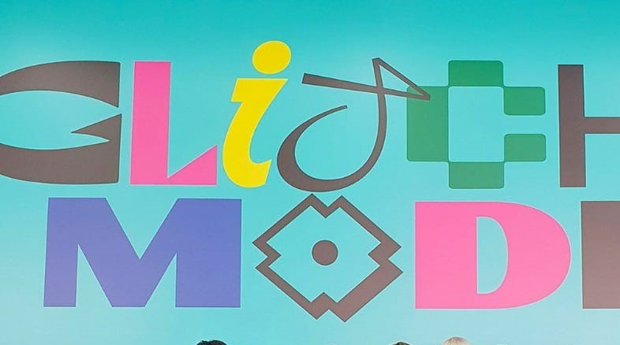

NEO CULTURE TECHNOLOGY(NCT)
NCT (Hangul: 엔시티, singkatan dari Neo Culture Technology) adalah sebuah boy group asal Korea Selatan yang dibentuk oleh SM Entertainment. Grup boyband ini terbagi menjadi beberapa sub-unit yaitu, NCT U, NCT 127, NCT Dream, dan WayV. Sejak diumumkan pembentukannya pada tahun 2016, grup ini telah berkembang hingga mencapai total 23 anggota yang tergabung dalam empat sub-unit berbeda.
Unit pertama dari grup ini, NCT U, memulai debut pada 9 April 2016 dengan singel digital The 7th Sense dan Without You. Unit kedua, NCT 127, yang berbasis di Seoul, memulai debut pada 7 Juli 2016 dengan album mini NCT #127. Unit ketiga, NCT Dream, memulai debut pada 24 Agustus 2016 dengan singel digital Chewing Gum. Unit keempat, WayV, berbasis di Tiongkok, debut pada 17 Januari 2019 dengan album singel The Vision.